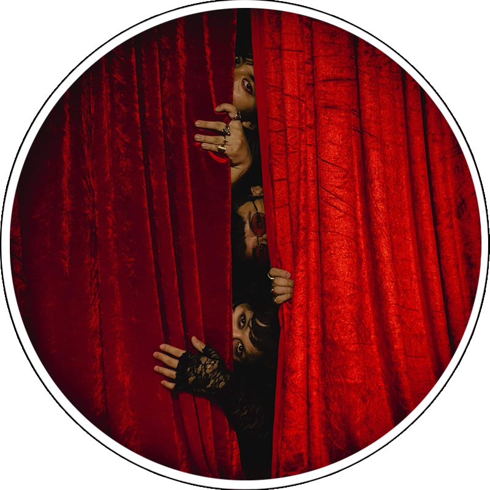

Bata Dahan Dahan is a part of the band's puzzle on starting young and trying to grow up in the music industry.
Sweet shadow captures the mental,burdens of depression and anxiety,which they experienced themselves.
History of the Band : In 2014, Alan Silonga decided to form a band for his son Blaster, who would become the band's lead guitarist. The Silongas were able to recruit drummer Badjao de Castro and bassist Zild Benitez, who are the sons of Allan's friends. Unique Salonga, who was already writing his own music, was later recruited to become the band's lead singer. They started with the primary,and temporary name Chop Suey.
About the Band : IV of Spades is a Filipino band from Manila, Philippines, consisting of lead vocalist and bassist Zild Benitez, lead guitarist Blaster Silonga, and drummer Badjao de Castro. Unique served as the band's lead vocalist and rhythm guitarist until the early 2018, but then chose to leave the same year to continue being a solo artist. Their musical style has been described as "pop funk" and funk rock. IV of Spades was heavily inspired by 1970s fashion, acts and sounds. Members of the band have cited various musical groups and artists as songwriting influences, including ABBA, Kings of Leon, Tame Impala, My Chemical Romance, and Jet.
My Juliana is the New Hey, Barbara. They said Barbara Era is out where in Juliana is now in. It is the sign of the rebirth of the new Spades.
Dulo ng Hangganan is a track where it talks about the warmth of falling in love and the pain of being behind.